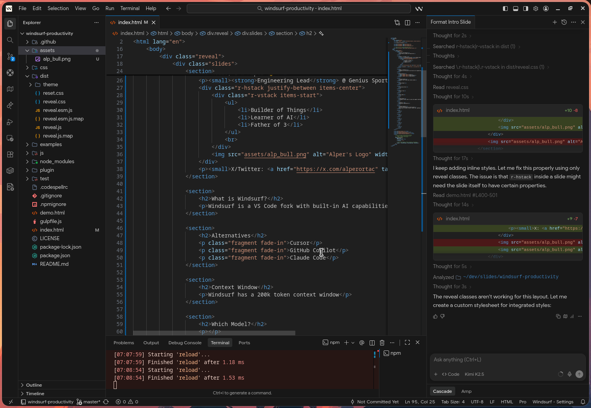
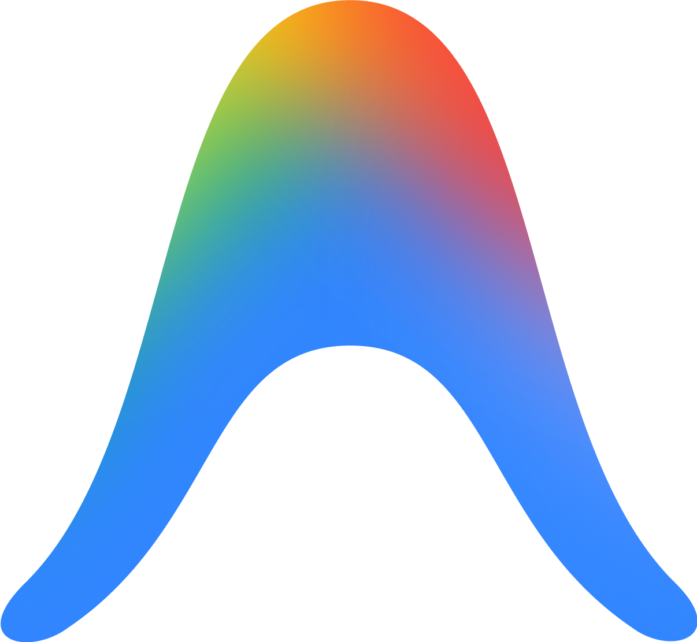
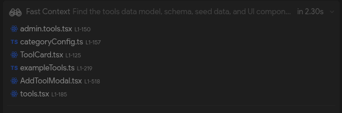
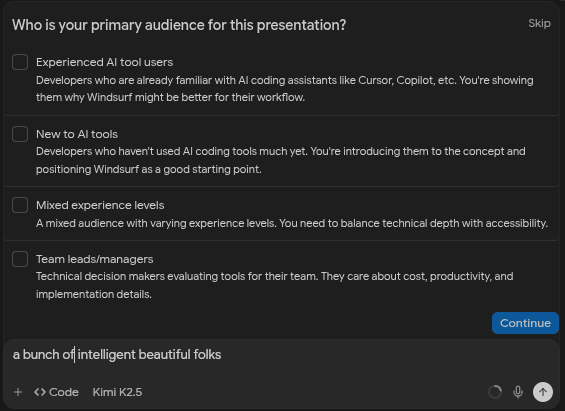
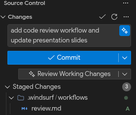
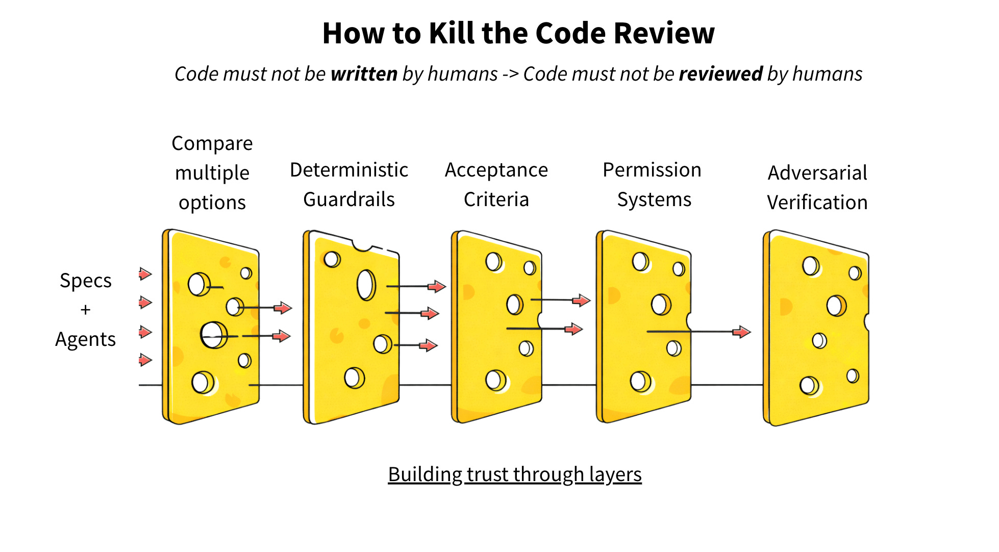
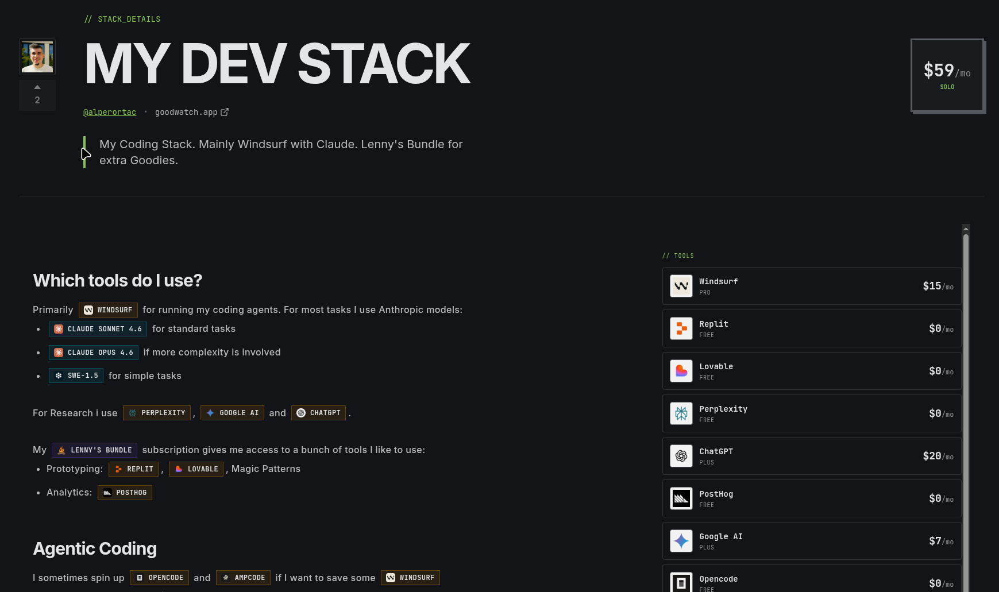

Coding with Windsurf
Optimizing for Cost and Productivity
⚠️ Outdated Pricing
Windsurf has abandoned the credits model shown in these slides.
They now use a usage-based quota with strict daily and weekly limits that is barely usable for professional work.
Even their $200/month plan is more limited than comparable subscriptions from other AI coding tools.
The productivity tips in these slides still apply, but evaluate Windsurf's current pricing carefully.
Hello, I'm Alper 👋
- Explorer of AI
- Builder of Things
- Father of Three

Self-employed Consultant & Developer
Engineering Lead @ Genius Sports
What is Windsurf?
Windsurf is a VS Code fork with built-in AI capabilities that assist with coding
👇 Me while I'm editing this slide 👇

Why not ... ?
Cursor
GitHub Copilot
Claude Code
JetBrains AI
Ampcode

Antigravity
Kilocode
Kiro
Opencode
Codex
Personal preference. All of these are great.
Costs
Free
$0
/month
25 credits
Pro
$15
/month
500 credits
Additional roll-over credits
+250 for $10
Token Count Credits
Comparison: Opus 4.5
Pro (1x)
Max 100 (5x)
Max 200 (20x)
Tokens per Dollar: Opus 4.5
Pro (1x)
11x cheaper
Max 100 (5x)
12x cheaper
Max 200 (20x)
5x cheaper
Which Model?
It depends...
- Changes over time
- Complexity of task
- Promo models
Me currently:
Opus 4.5 (4x), Sonnet 4.5 (2x) and SWE 1.5 (free)
Rules
AGENTS.md
+ # Rules
+ Use types, never `any`
In your project root directory
Browser Verification
MCP or CLI to interact with a real browser
Has access to browser console, network tab, lighthouse audits, etc.
Choose Wisely
- Playwright CLI (best to avoid context rot)
- Playwright MCP
- Chrome Devtools MCP (most features)
Rules #2
AGENTS.md
# Rules
Use types, never `any`
+ Use playwright-cli to verify UI changes
Backwards Compatibility
AI:
Let me add backwards compatibility for this legacy code.
Me:
dont, this is just adding tech debt
AI:
I copied it to src/api.new.ts and kept the old file for reference.
Me:
no! just overwrite the existing file!
Rules #3
AGENTS.md
# Rules
Use types, never `any`
Use playwright-cli to verify UI changes
+ Never add backwards compatibility without explicit approval
Writing Tests
AI:
Let me replace the assertion with a console.error() statement.
Me:
no no never make tests less reliable!
AI:
I added a 15% threshold for correctness to let the tests pass.
Me:
HOW ON EARTH IS THAT ACCEPTABLE?!
Rules #4
AGENTS.md
# Rules
Use types, never `any`
Use playwright-cli to verify UI changes
Never add backwards compatibility without explicit approval
+ Never loosen test assertions just to make them pass
+ Failing real tests is better than fake passing tests
+ You can declare tests as ready even if they are failing
Context Window
Most models have a 200k token context window (a few have 1M)
Once >50% full, performance degrades significantly
Distractions that fill context fast:
Context Curation
🧹 What can we do to keep the context clean? 🧹
❌ Cluttered Context
✅ Curated Context
.md files
🔄 New chats frequently
⏪ Revert bad results
Fast Context

Why it's great
- It's a subagent → context stays clean
- Extremely fast ⚡
Rules #5
AGENTS.md
# Rules
Use types, never `any`
Use playwright-cli to verify UI changes
Never add backwards compatibility without explicit approval
Never loosen test assertions just to make them pass
Failing real tests is better than fake passing tests
You can declare tests as ready even if they are failing
+ Always use Fast Context when searching for file contents
Interviews
Chat asks for clarifications:
- Less guessing
- Better requirements

Interviews #2
Every Opus prompt costs 4 credits - no matter the token count
💸 4 credits
🗂️ Codebase context
🧪 Test expectations
📐 Architecture decisions
🔗 Related files
⚙️ Edge cases
✅ 4 credits
Interviews #3
The Ask tool fills the prompt token context with requirement gathering
Each ask round-trip adds context without spending credits
Rules #6
AGENTS.md
# Rules
Use types, never `any`
Use playwright-cli to verify UI changes
Never add backwards compatibility without explicit approval
Never loosen test assertions just to make them pass
Failing real tests is better than fake passing tests
You can declare tests as ready even if they are failing
Always use Fast Context when searching for file contents
+ Ask before, when blocked mid-task and to confirm unknowns
+ Never guess, never assume or improvise unagreed solutions
+ Only I can declare a task complete
Planning
Communicate intent, not implementation details
❌ Vague Prompt
✅ Spec-driven
spec.md
Goal: Usage dashboard with daily visitors
Viz: Line chart (Recharts), last 30 days
Data: REST API /api/analytics
Style: Dark theme, Tailwind
Tests: E2E for chart rendering
Simple markdown files and/or plan mode are sufficient
Skill Tree
Apart from Rules there are:
- Memories
- Skills
- MCP's
- Workflows (Commands)
I use them only sparingly because I prefer progressive improvements.
YMMV. You might want to try frameworks like:
- Openspec: https://openspec.dev
- Superpowers: https://github.com/obra/superpowers
- Oh my Opencode: https://github.com/code-yeongyu/oh-my-opencode
Troubleshooting
Let AI show you its system prompt
Why didnt you follow the instructions about legacy code?
Which part of the rules make you write tests like that?
Curiosity > Judgement
Little Helpers
- Autocomplete
- Commit Message Generation 👉
- Lifeguard reviews code for issues

Magic Wand: If I could have one new Windsurf feature
Subagents with isolated context are the missing piece
🪄 Orchestrator
❓ Ask
📋 Plan
⚙️ Execute
🔍 Review
Each subagent has its own context to avoid pollution
Next steps
Swiss-cheese model and spec-driven development


AI Stack
Building a community for AI enthusiasts
https://aistack.to